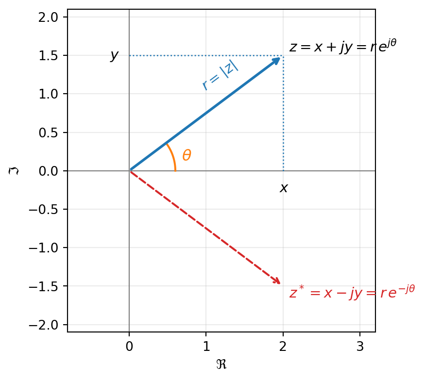

Apéndice A — Números complejos
NotaPara qué sirve este apéndice
Los números complejos no son materia de este curso: son su idioma. Aquí está todo lo que el curso da por sabido — el mismo contenido que cubre la ayudantía de nivelación de la semana 1. Si el diagnóstico de la primera clase te costó, trabaja este apéndice completo antes de la segunda semana; si no, úsalo como referencia rápida.
A.1 Por qué un curso de señales habla en complejo
La señal más importante del semestre es la exponencial compleja e^{j\omega t}. No porque las señales del mundo sean complejas — un micrófono entrega números reales — sino porque toda sinusoide real se escribe con exponenciales complejas, y las exponenciales se derivan, se integran y se multiplican con un álgebra incomparablemente más simple que la de senos y cosenos. Una ecuación diferencial con coseno se convierte en álgebra al pasarla por e^{j\omega t}. Ese truco — de nombre fasor — es el corazón de Fourier, Laplace y Z.
A.2 El plano complejo
Un número complejo es un punto del plano: z = x + jy, \qquad x = \Re\{z\},\quad y = \Im\{z\}
En ingeniería usamos j (no i, reservada para corriente) con j^2 = -1.
El mismo punto se describe de dos maneras:
- Cartesiana z = x + jy: coordenadas horizontal y vertical.
- Polar z = r\,e^{j\theta}: distancia al origen r = |z| = \sqrt{x^2 + y^2} y ángulo \theta = \angle z medido desde el eje real positivo.
El puente entre ambas es la identidad de Euler — la fórmula más usada del semestre: e^{j\theta} = \cos\theta + j\sin\theta
de donde x = r\cos\theta, y = r\sin\theta y \theta = \operatorname{atan2}(y, x) (¡cuidado con el cuadrante: -1-j no tiene el mismo ángulo que 1+j!).
Valores que hay que reconocer sin calcular (aparecerán cientos de veces): e^{j0} = 1, \qquad e^{j\pi/2} = j, \qquad e^{j\pi} = -1, \qquad e^{j3\pi/2} = e^{-j\pi/2} = -j, \qquad e^{j2\pi} = 1
A.3 Aritmética: cada forma tiene su especialidad
Sumar y restar: en cartesiana. Componente a componente, como vectores: (2 + j) + (1 - 3j) = 3 - 2j
Multiplicar y dividir: en polar. Los módulos se multiplican, los ángulos se suman: r_1 e^{j\theta_1} \cdot r_2 e^{j\theta_2} = r_1 r_2\, e^{j(\theta_1 + \theta_2)}, \qquad \frac{r_1 e^{j\theta_1}}{r_2 e^{j\theta_2}} = \frac{r_1}{r_2}\, e^{j(\theta_1 - \theta_2)}
Multiplicar por e^{j\phi} es rotar en \phi sin cambiar el tamaño — multiplicar por j es girar 90°. Esta lectura geométrica de la multiplicación reaparecerá al leer diagramas de polos y ceros (capítulo 6).
Potencias: en polar, siempre. z^n = r^n e^{jn\theta} \qquad \text{(fórmula de De Moivre)}
TipRegla práctica
Antes de operar, pregúntate: ¿voy a sumar? → cartesiana. ¿Voy a multiplicar, dividir o elevar? → polar. Convertir entre formas cuesta una línea; operar en la forma equivocada cuesta una página.
A.4 Conjugado y módulo
El conjugado z^* = x - jy = r\,e^{-j\theta} refleja el punto en el eje real. Tres identidades que el curso usa sin avisar: z\,z^* = |z|^2, \qquad \Re\{z\} = \frac{z + z^*}{2}, \qquad \Im\{z\} = \frac{z - z^*}{2j}
La primera es la razón de que en las definiciones de energía aparezca |x(t)|^2: si la señal es compleja, |x|^2 = x\,x^* es real y positivo, como corresponde a una energía.
Ejemplo (calibre diagnóstico). Para z = 2e^{j\pi/6}: \;z^* = 2e^{-j\pi/6} y z\,z^* = 4. En cartesiana: (1+j)(1-j) = 1 - j^2 = 2 = |1+j|^2. ✓
A.5 El fasor: e^{j\omega t} como movimiento
Hasta aquí, z era un punto quieto. La señal e^{j\omega t} es un punto en movimiento: para cada t, un número complejo de módulo 1 y ángulo \omega t. Al crecer t, el punto recorre el círculo unitario en sentido antihorario, dando una vuelta cada T = 2\pi/\omega segundos.
Sus sombras son las sinusoides: la proyección sobre el eje real es \cos(\omega t); sobre el imaginario, \sin(\omega t). Y despejando de Euler: \cos(\omega t) = \frac{e^{j\omega t} + e^{-j\omega t}}{2}, \qquad \sin(\omega t) = \frac{e^{j\omega t} - e^{-j\omega t}}{2j}
Toda sinusoide real son dos fasores contrarrotantes. Cuando en el capítulo 3 el espectro de un coseno muestre dos líneas — una en \omega y otra en -\omega — será exactamente esta identidad hecha dibujo. Las “frecuencias negativas” no son un misterio: son el fasor que gira al revés.
A.6 Raíces de un número complejo
z^N = w tiene exactamente N soluciones, repartidas en un polígono regular sobre el círculo de radio |w|^{1/N}: z_k = |w|^{1/N} e^{j(\theta_w + 2\pi k)/N}, \qquad k = 0, 1, \dots, N-1
Ejemplo. z^2 = -1 = e^{j\pi}: soluciones e^{j\pi/2} = j y e^{j3\pi/2} = -j. ✓
Las N soluciones de z^N = 1 son las raíces de la unidad e^{j2\pi k/N} — N puntos equiespaciados en el círculo unitario. Guarda esta imagen: en el capítulo 7, la DFT se construye enteramente sobre estos puntos.
A.7 Ejercicios de nivelación
Resuélvelos sin calculadora; las respuestas están al final de cada uno entre corchetes.
- Calcula |3 + 4j| y \angle(3+4j) aproximado. — [5; \approx 0.93 rad \approx 53°]
- Escribe 1 + j en forma polar. — [\sqrt{2}\,e^{j\pi/4}]
- Escribe -1 - j en forma polar (cuidado con el cuadrante). — [\sqrt{2}\,e^{-j3\pi/4}, equivalente a \sqrt{2}\,e^{j5\pi/4}]
- ¿Cuánto valen e^{j\pi/2}, e^{j\pi} y e^{j100\pi}? — [j; -1; 1]
- Si z = e^{j\theta}, ¿cuánto valen \Re\{z\}, \Im\{z\} y |z|? — [\cos\theta; \sin\theta; 1]
- Calcula (1+j)(1-j) y (1+j)^2. — [2; 2j]
- Para z = 2e^{j\pi/6}: escribe z^* y calcula z\,z^* y z^3. — [2e^{-j\pi/6}; 4; 8j]
- Encuentra todas las soluciones de z^2 = -1 y de z^3 = 8. — [\pm j; 2,\; 2e^{j2\pi/3},\; 2e^{-j2\pi/3}]
- Dibuja la trayectoria de e^{j\omega t} cuando t crece, y la de e^{(-1+j\omega)t}. — [círculo unitario antihorario; espiral que decae hacia el origen]
- Demuestra que \cos\theta = \frac{e^{j\theta}+e^{-j\theta}}{2} a partir de la identidad de Euler. — [sumar e^{j\theta} y e^{-j\theta} y despejar]
En el banco del curso: [DB E0005, E0006, E0007, E0012] son ejercicios de prerrequisito con este material.